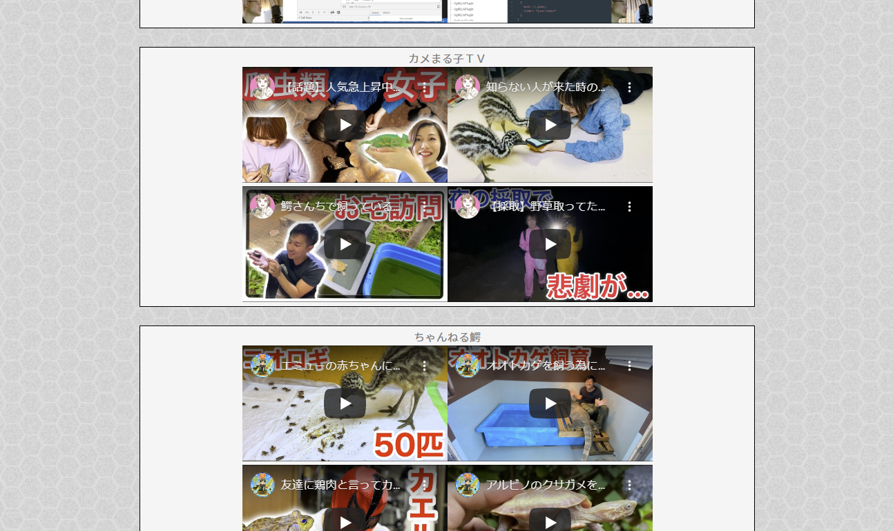

リクガメWebページの紹介
サイトタイトルのアニメーションを表示し、ログインへ誘導する画面
【ここで挑戦したこと】
- アニメーションの基礎
- ローダー（スピナー）の実装
- mixinの使い方
- ::hover疑似要素の使い方
IDとパスワードを入力してログインする画面。ログイン成功したらホーム画面に遷移する画面
【ここで挑戦したこと】
- Coockieの基礎（次回ログインでユーザーコードの入力を省略）
- Sessionタイムアウトの実装
- Mysqlからselectしたパスワードとの照合
- パスワードの暗号化（saltの付与、md5やsha1による暗号化)
- エラーメッセージの表示
各メニューへのリンクが表示される画面。全ての画面の起点となる画面
【ここで挑戦したこと】
普通の画像ギャラリー。スライダーで画像サイズを4段階で調整可
【ここで挑戦したこと】
- スライダー（input type="range"）の使い方と値に応じたclass変更
- PHPでDBから画像パスを取得し、JSにJson形式で渡し、画像要素を動的生成する
- 画像表示用ライブラリLightBoxの使い方
- PHPによるサムネイル画像の自動生成処理
身体測定結果（メニュー名：Health Data）
月1回の身体測定結果をカード式で表示する（追加・削除・編集可能)
【ここで挑戦したこと】
- 入力画面の実装（画像アップロードあり）
- リアルタイムバリデーションチェックの実装（必須・型・長さ）
- 登録時チェックの実装
- 編集画面の実装
- 削除機能の実装（ディレクトリから画像も削除する）
- 削除結果をトーストで表示（ライブラリ使用）
ケージ内温湿度管理（メニュー名：Cage Conditions）
温度湿度計データロガーから出力したCSVデータを読み取り日別にグラフ表示する機能
【ここで挑戦したこと】
- 非同期処理によるデータ取込処理と結果表示
- グラフ描画（Chart.js使用）
リクガメ飼育に関するウェブページへのリンク集と、YoutubeチャンネルのRSSの取得（画面から新規RSSの追加も可能）

【ここで挑戦したこと】
- リアルタイム検索機能（検索フィールドに入力するたびに絞り込まれる）
- RSSフィード（JSON）の取り扱い
- SASSによるスタイル記述にした
- 何もかも初めてなので、scriptはJqueryではなくネイティブJSで書いた
- githubによるソース・課題管理を何となくやってみた
- レスポンシブ対応（上記すべての画面でスマホでも見れるようにした）
- Webサーバーへのホスティング・公開
- パフォーマンス改善
- ログインユーザー固有の設定（カラーテーマや権限など）
- PHP側で生じたエラーを適切に表示出来ていない
- セキュリティ対策がきっと甘い。でもどうすればいいかわかっていない。
- JSのClass化などによる効率的な書き方がよくわかっていない
- ソースが汚いってのはわかるんだけど、どうすればいいかわからない
- Laravelなどのフレームワークの勉強
{kind=link}
{kind=link}
{kind=link}
{kind=link}
{kind=link}
{kind=link}
{kind=link}
{kind=link}
{kind=link}
{kind=link}
{kind=link}
{kind=link}